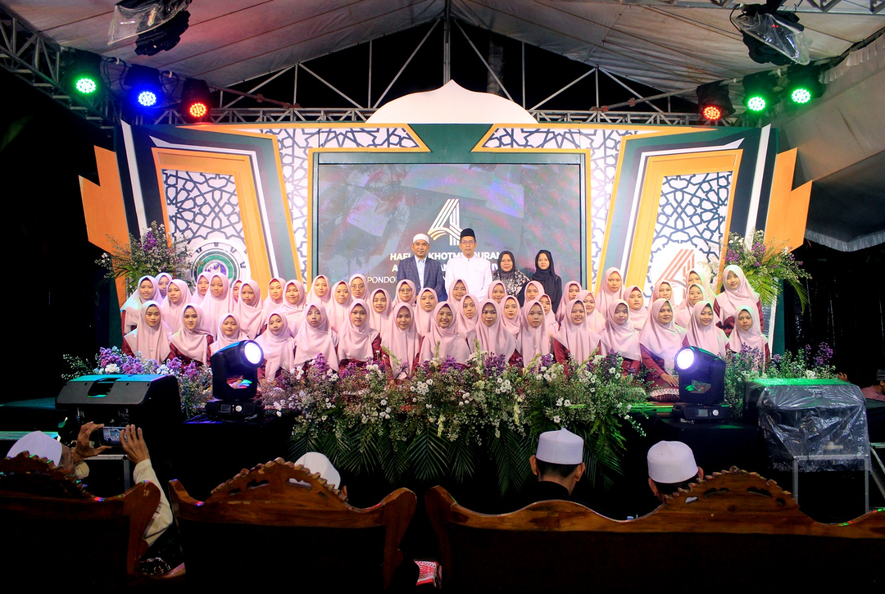

Pesantren Darul
Mukhlisihin
— Bersama Santri Membangun Negeri —
Tempat berseminya ilmu, tumbuhnya iman, dan terbinanya akhlak mulia. Jadikan putra-putri Anda generasi yang hafal Al-Qur'an, berilmu, dan berkarakter unggul.

Bambanglipuro
Muqoddimah
Pengasuh
Pondok Pesantren Darul Mukhlishin dengan berbasis Al-Qur'an dan kitab klasik dengan mengusung tema salafiyah dan modern ikut berpartisipasi dalam mewujudkan tujuan diutusnya manusia di bumi, yaitu sebagai Khalifah fil ardh, dengan menyiapkan generasi yang berilmu, beramal sholeh, berdakwah, bersabar dan tawakal.
Menjadikan santri sebagai penerus para ulama' dalam mensyiarkan dan berdakwah di semua lapisan masyarakat. Sama halnya dengan lembaga-lembaga pendidikan formal yang bertujuan menghasilkan generasi-generasi penerus bangsa.
Baca Selengkapnya →Pilihan Program
Terbaik untuk Putra-Putri Anda
Tiga program unggulan dirancang secara holistik untuk membentuk santri yang kompeten secara akademik dan spiritual.
Tahfidz Al-Qur'an
Program menghafal Al-Qur'an 30 juz dengan metode modern dan bimbingan intensif dari Ibu Nyai Nur Latifah. Target hafal dalam 3–5 tahun dengan kualitas terjaga.
Lihat Program →Kajian Kitab Kuning
Mempelajari khazanah keilmuan Islam klasik melalui kitab-kitab ulama terdahulu. Santri dilatih membaca, memahami, dan mengaplikasikan isi kitab dalam kehidupan sehari-hari. Dibawah bimbingan Kyai Muchsin
Lihat Program →Pembinaan Karakter
Program pengembangan kepribadian santri melalui pelatihan kepemimpinan, disiplin, komunikasi, dan kewirausahaan yang mengintegrasikan nilai-nilai Islam.
Lihat Program →